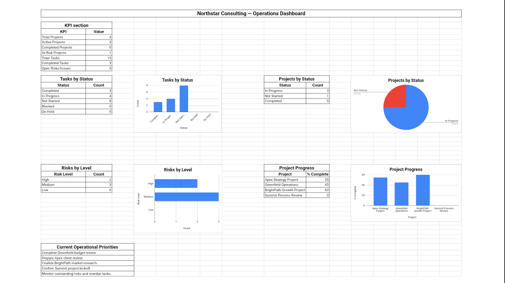

Project & Operations Management
Project & Operations Management System
A structured operations workflow covering project planning, task management, project tracking, SOPs, risk management and operational reporting.

Overview
This project is an independent portfolio demonstration created to demonstrate practical business workflows. It presents a structured project and operations management system covering planning, task management, tracking, SOPs, risk management and operational reporting.
Business Scenario
Operations work involves coordinating projects, tasks, processes and risks across a team. Without structure, tasks overlap, deadlines slip and processes become inconsistent. This demonstration shows how a practical operations system can bring order to that complexity.
Objective
To build a clear, repeatable operations workflow that organizes project planning, task management, progress tracking, standard operating procedures, risk tracking and operational reporting, so that work stays structured and visible.
What Was Built
A set of structured documents and tracking sheets covering: a project planning template, a task management tracker, a project progress dashboard, an SOP documentation structure, a risk tracking log and an operational reporting template.
Workflow / Process
Projects are planned with clear objectives, scope and milestones. Tasks are broken down and assigned in a central tracker. Progress is monitored through a project dashboard. SOPs are documented to make repeatable processes consistent. Risks are logged, assessed and tracked through to resolution.
Operational reporting summarizes project status, open tasks, risks and next steps in a single view.
Tools Used
Google Sheets for tracking and dashboards, Google Docs for SOPs and documentation, and Google Drive for organized file storage.
Skills Demonstrated
Key Takeaways
- Clear project planning with milestones keeps work aligned and measurable.
- A central task tracker reduces duplication and missed deadlines.
- Documented SOPs make repeatable processes consistent across a team.
- Risk tracking ensures potential issues are identified early and followed through.